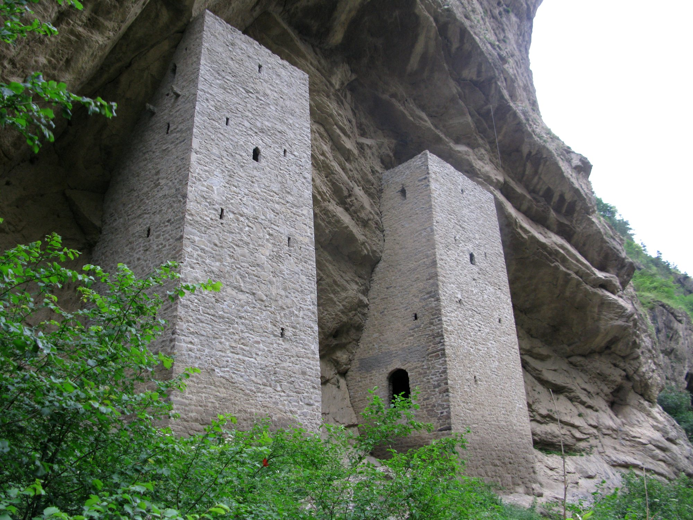

Проект по ОРГ · НИУ ВШЭ
Аргунский маршрут:
от «Сердца Чечни» до «города мёртвых»
Из современного Грозного — мемориал, музей, мечеть, небоскрёбы и «море» — на юг, через Аргунское ущелье, водопады и средневековые башни к древнему некрополю почти у границы с Грузией.
Регион
Что такое Чечня
Чечня — республика в составе Российской Федерации на Северном Кавказе. Полное название — Чеченская Республика, столица — Грозный.
На севере республика граничит со Ставропольским краем, на востоке — с Дагестаном, на западе — с Ингушетией и Северной Осетией — Аланией, на юге — с Грузией. Площадь — около 15,6 тыс. км².
Население — преимущественно чеченцы, также здесь живут русские, ингуши и другие народы. Официальные языки — русский и чеченский. Север республики — равнины, юг занят хребтами Большого Кавказа: туда и ведёт наш маршрут. Основные отрасли экономики — сельское хозяйство, строительство, торговля, энергетика и промышленность.
- 15,6тыс. км² — площадь республики
- 5соседей: Ставрополье, Дагестан, Ингушетия, Северная Осетия, Грузия
- 2официальных языка — русский и чеченский
- Грозныйстолица и стартовая точка маршрута
Маршрут
Из Грозного на юг
Подложка карты не загрузилась (нет интернета?) — точки и линия маршрута на месте.
Маршрут идёт из Грозного в горную часть юга Чечни и сочетает культурные, природные и исторические достопримечательности. Дорога проходит через предгорья и горы: равнина сменяется ущельями и серпантинами. Самый живописный участок — Аргунское ущелье. Дорога к Цой-Педе идёт по удалённой местности, и последний участок требует больше времени.
- Типисторико-культурный + природный + горный туризм
- 1 деньГрозный и Грозненское море
- 2–3 днявсе 10 остановок
- Дорогатрасса Грозный — Шатой — Итум-Кали
Идея: от современной столицы через природу и средневековую архитектуру — к Цой-Педе, самому древнему слою истории Чечни.
Нажмите, чтобы перевернуть
Финал
10 рублей 2010 года «Чеченская Республика»
Чечня — удивительный и такой неизведанный регион России. Она увековечена во многих аспектах, но мы хотим рассказать вам об особой монете — 10 рублей 2010 года «Чеченская Республика». Покажем её!
- 1.10.2010в обращении с этой даты · Банк России, серия «Российская Федерация»
- 27 мм · 8,4 гбиметалл: латунное кольцо и медно-никелевый диск
- Реверсгерб ЧР: башня, горы, нефтяная вышка, национальный орнамент
Посмотрите внимательно — и увидите весь наш маршрут: башни Аргунского ущелья, горы Большого Кавказа и Грозный, выросший на нефти.
Проверьте сдачу!
Источники: russian-money.ru · moneta-russia.ru · Банк России
Библиография
Источники
О республике и маршруте
- Большая российская энциклопедия: Чеченская Республика. https://old.bigenc.ru/geography/text/5453415
- Kavkaz.travel: туристический маршрут по Аргунскому ущелью. https://kavkaz.travel/en/touristRoutes/32
- Школьный туризм России: маршрут по Чечне. https://школьныйтуризмроссии.рф/routes/detail/?ELEMENT_ID=1116
- Аргунский музей-заповедник: экскурсия в Цой-Педе. https://argmz.ru/экскурсия-в-цой-педе/
- Kavkaz.travel: Ушкалойские башни. https://kavkaz.travel/ru/attractions/81/ushkaloiskie-bashni
Монета
- Банк России: база памятных монет, «Чеченская Республика». https://www.cbr.ru/cash_circulation/memorable_coins/coins_base/ShowCoins/?cat_num=5514-0073
- Russian-money.ru: 10 рублей 2010 «Чеченская Республика». https://www.russian-money.ru/coins/rf/rossijskaya-federaciya/10-rublej-2010-chechenskaya-respublika-spmd--2470
- Moneta-russia.ru: 10 рублей 2010 года «Чеченская Республика». https://moneta-russia.ru/coins/rossiyskaya-federatsiya-2/10-rubley-2010-goda-chechenskaya-respublika/
Фотографии
Карта: © участники OpenStreetMap, библиотека Leaflet. Линия маршрута условная — точки соединены по прямой, реальная дорога извилистее.